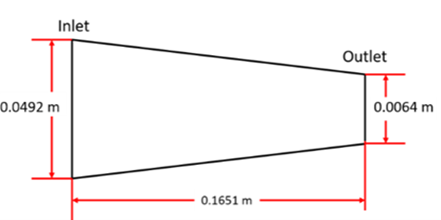
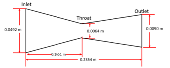
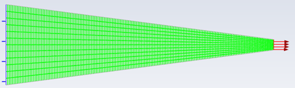
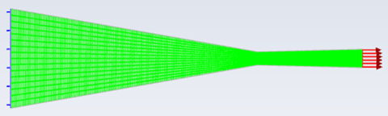
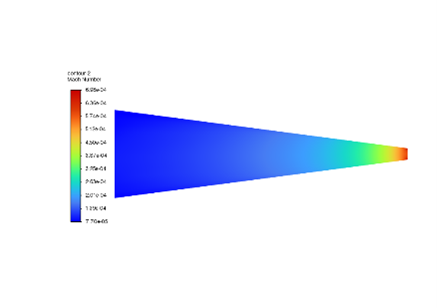
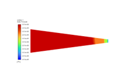
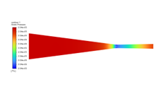

Overview
Simulated compressible flow through converging/diverging rocket nozzles to evaluate choking behavior, shockwave formation, and performance at target operating conditions. Used ANSYS to capture internal flow features and compared computational results against isentropic flow relations to validate trends. Automated post-processing and performance visualization in MATLAB to accelerate iteration on nozzle calculations and outputs.
Photos
Design


Analysis






Technical Report
Full compressible flow analysis report detailing CFD setup, shock structure evaluation, validation against isentropic flow relations, and automated MATLAB post-processing results.
View Full Report (PDF)My Role
- Simulated converging/diverging nozzle performance in ANSYS, analyzing shockwave formation and choked flow behavior
- Validated computational results by correlating CFD outputs with isentropic flow equations
- Automated post-processing and performance visualization in MATLAB, reducing data processing time by 80%
Tools Used
Modeling & Simulation ANSYS Post-Processing Testing Validation MATLAB Technical ReportKey Results
- Identified choking conditions and shockwave behavior in converging/diverging nozzle simulations
- Achieved approximately 90% correlation between CFD results and isentropic flow solutions
- Reduced post-processing time by 80% through MATLAB automation, enabling faster iteration of nozzle calculations